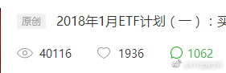

回复@快乐Daisy1115:如果是可口可乐肯德基的我当然Ok啊。然而大部分都是p2p和各种理财平台，我还有点底线，不会为了钱接这种。//@快乐Daisy1115:回复@乐活广场com:可以接点，赚个油钱，我们不介意的@ETF拯救世界:第一次阅读量超过4万，纪念一下。什么时候我也有10万+的文章，是不是就可以成为网红了。 
回复@善广辉:现在看，除了当时可以买的50和恒生，到目前，500和养老算是符合标准了。就看3个月后的年报季报了。@ETF拯救世界:按照这个节奏，50为代表的大蓝筹上半年应该就可以造个万人坑出来~不过咱们的持仓依然不动……策略+纪律>预测……
回复@文小陈c:对不对？还有哦，我那时候写的会买的500估值，已经比现在高了哦。//@文小陈c:最早一批铁粉，想起益达两年多前写的荒岛十年，“50和恒生的现估值”，眨眼间就快到万人坑了，我A真是个神奇的地方～@ETF拯救世界:按照这个节奏，50为代表的大蓝筹上半年应该就可以造个万人坑出来~不过咱们的持仓依然不动……策略+纪律>预测……
回复@小牧yc:奇怪的是，这20万人很沉默，基本听不到他们的声音啊。//@小牧yc:2017-10-28 股东人数185875，将近20万人。。。。@财联社APP:对于“孙宏斌孙总会不会接手贾跃亭在乐视网的持股，还是会引入新的战略投资者来接手？”的问题，乐视网称，贾跃亭先生目前为乐视网第一大股东，持股25.67%，融创中国持股乐视网8.56%，孙宏斌先生为融创中国的实际控制人。目前贾跃亭并未表达对所持乐视网股权的处置安排，也未表示不对所持股权在质押机构的质押行为支付补足保证金。如果因股价下跌，贾跃亭也未对保证金进行补足，则其所质押的乐视网股权将由质押机构按照协议条款进行相应处置。
我现阶段的投资逻辑：看好中国和A股，就不可能只看好100只股票。A股目前3400只股票，大涨的是中证100的100只。沪深300中的剩下200只和再往后的中证500基本不动。都说A股港股化，好的，就算未来严格退市+仙股遍地，3400只里面，2400只都是垃圾可以不可以？还不行？那么3400只里面，3000只都是垃圾，可以了吧。那还是有500只啊。怎么可能一个大牛市只有50-100家公司涨，其它都不动？更何况，经过几年漫漫下跌，很多中小股票已经颇具投资价值了。前几年，小就是美。现在，大就是好。要我说，都是扯淡，忽悠。美和好，跟规模一点关系都没有。谁便宜买谁。最重要别被人忽悠和洗脑。50、红利、恒生，我们2016年买了不少。现在越买越多的是500以及医药等。逻辑就是，不信A股有3300只辣鸡，100只好股票。至少有500只还不错吧！
乐视除了主动抛售的股票，有几个方面的股票一定会抛。一个是各大指数基金的持仓。之前乐视除了是创业板之类指数的成分股，甚至是沪深300的成分股。现在已经调出来了，有很多基金必须要抛。第二是质押部分，机构也要抛。这些筹码消化掉，再说其他机构散户的抛盘吧。不知道多少钱会有人接？@财联社APP:对于“孙宏斌孙总会不会接手贾跃亭在乐视网的持股，还是会引入新的战略投资者来接手？”的问题，乐视网称，贾跃亭先生目前为乐视网第一大股东，持股25.67%，融创中国持股乐视网8.56%，孙宏斌先生为融创中国的实际控制人。目前贾跃亭并未表达对所持乐视网股权的处置安排，也未表示不对所持股权在质押机构的质押行为支付补足保证金。如果因股价下跌，贾跃亭也未对保证金进行补足，则其所质押的乐视网股权将由质押机构按照协议条款进行相应处置。